Unity's particle system is a godsend! You can use it to create all kinds of effects. In this tutorial, I'll show you how to make butterflies using texture sheet animation.
You can see this effect in my game Super Eyebrow Princess.
Just discovered texture sheet animations for particles in unity. Also, I'm spending too much time on this. Maybe I should shelf this game and just make a game about butterflies.#screenshotsaturday #indiedev #indiegamedev #gamedev #pixelart #madewithunity #ドット #ゲーム制作 pic.twitter.com/5vIqCuSO5D
— Ashar makes games (@AzCHIT) January 23, 2021
Let's start
To start off, you'll need the butterfly sprites. I made mine in Aseprite.
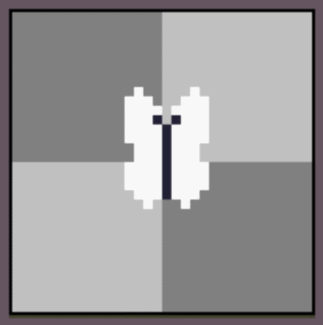
Export it as a spritesheet.
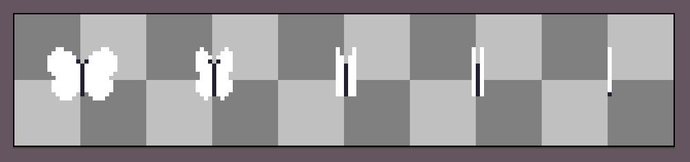
Or you can just download mine.
Now open a Unity project and import the spritesheet.
To get the sprites ready, select the spritesheet.
Change Sprite Mode to Multiple and Filter Mode to Point. Click Apply.
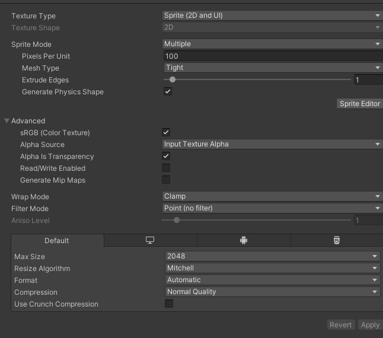
Now click the Sprite Editor button.
Slice the spritesheet using Grid By Cell Size (32 by 32 pixels in my case), then click Apply.
The individual sprites are now ready to use in the particle system.
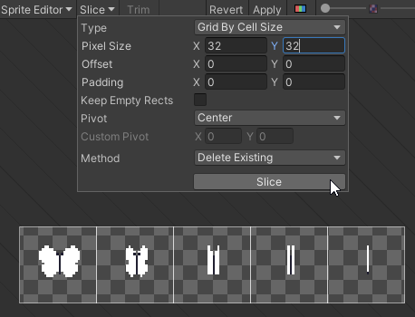
Open your scene and create a new particle system.
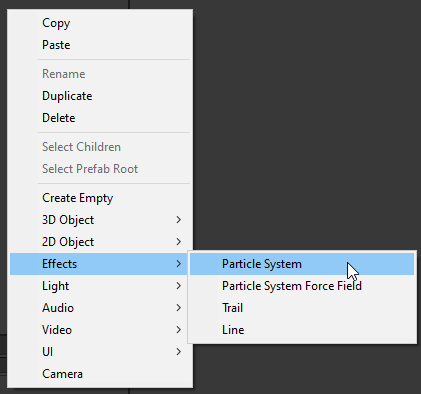
This is what the effect looks like.
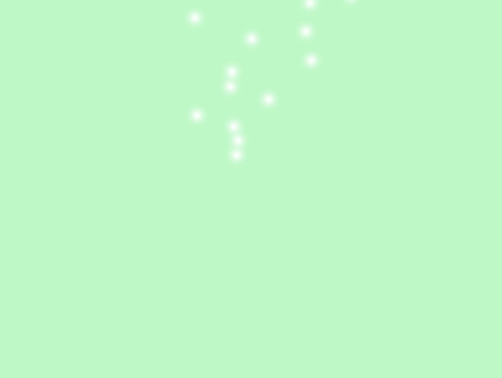
Change the shape to a box and set the scale to x = 10, y = 10, z = 10.
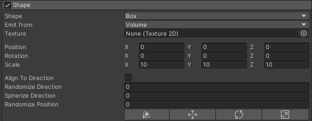
Change Max Particles to 10.
Change Start Speed to 0.
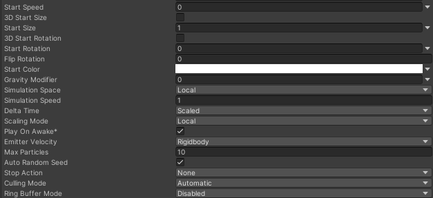
The particles will now look like this.
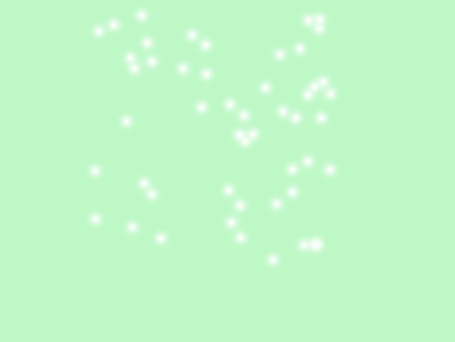
Now let's make the particles look like butterflies.
We do this with the particle system's Texture Sheet Animation module.
Enable Texture Sheet Animation.
Change Mode to Sprites.
Add all the butterfly sprites from the sheet in the correct order so they play from the first frame to the last and then back to the first.
Change Time Mode to FPS.
Set FPS to around 10-15.
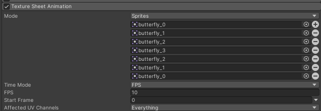
You can now see butterflies instead of white particles.
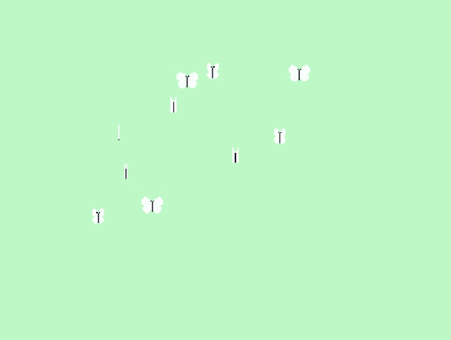
To make them flutter around, enable the Noise module.
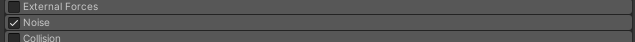
Now the effect looks much more natural.
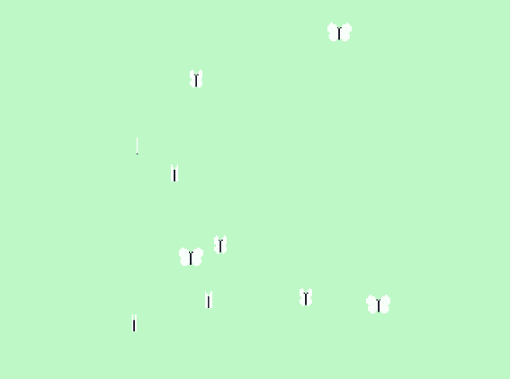
The effect is mostly done. You'll also want to increase the lifetime and add some color to the butterflies by changing the start color.
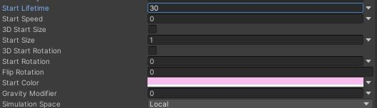
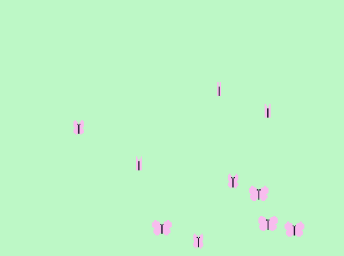
If you enable Collision, the butterflies will also interact with objects around them.
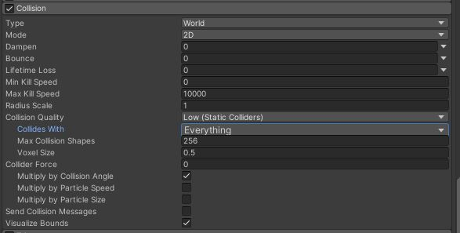
That way, the princess can interact with the butterflies in my game, which makes the effect feel much more alive than non-interactive background decoration.
You can also annoy the butterflies. 🦋#indiedev #indiegamedev #gamedevelopment #gamedev #pixelart #madewithunity #ドット #ゲーム制作 pic.twitter.com/N8fTDCK6vz
— Ashar makes games (@AzCHIT) January 22, 2021
And that's it for the tutorial. I hope you learned something new. Feel free to use this effect in your games!